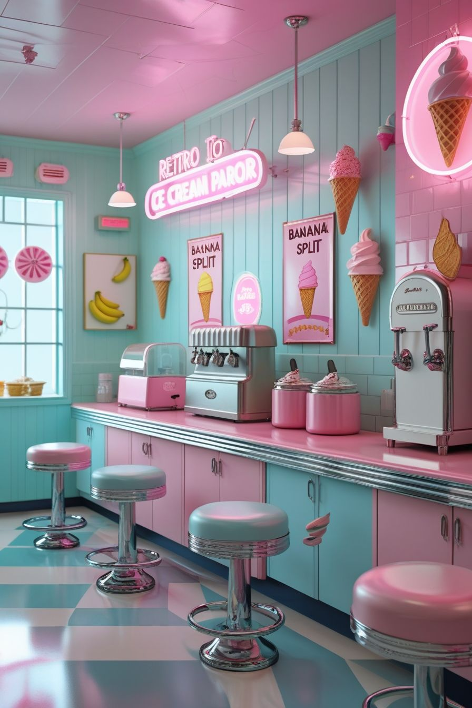

Au cœur du Repaire
Un lieu où l'atmosphère rétro côtoie l'engagement moderne.
Notre Histoire 🕰️
Tout a commencé par une question simple : comment créer à Toulon un espace où les amoureux des années 50 croisent les défenseurs des chats ? La réponse ? Le Repaire des Moustaches. En poussant nos portes, vous entrez dans une bulle temporelle : banquettes en vinyle rouge, jukebox qui joue Duke Ellington, néons rose bonbon. Mais cette déco nostalgique cache une vraie modernité : celle de l'engagement éthique, du care animal et de la solidarité active.
Nos Engagements 🤝
Le Repaire n'est pas une décoration. C'est un projet politique au sens du vivre-ensemble. Nos pensionnaires (Velours, Biscuit, Moonlight et les autres) ne sont pas des figurants : ce sont des rescapés de la rue ou des refuges partenaires, vivant en liberté et attendant une adoption respectueuse. Chaque café commandé, chaque atelier suivi, chaque gâteau acheté finance directement leur accueil, leurs soins et leurs rêves de foyer. Vous n'êtes pas client ici. Vous êtes membre d'une communauté.
